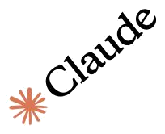
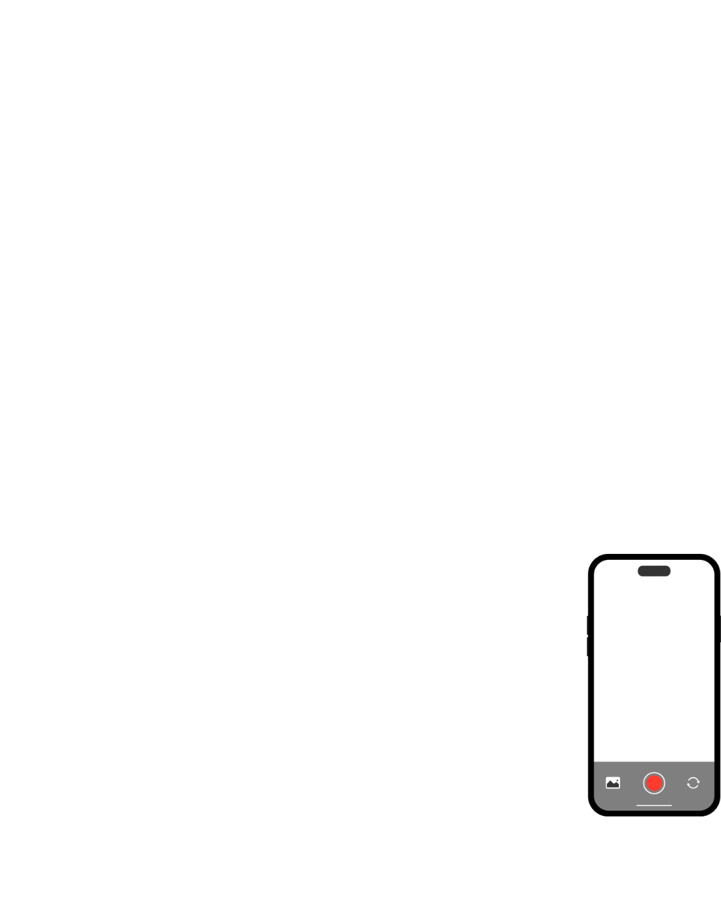
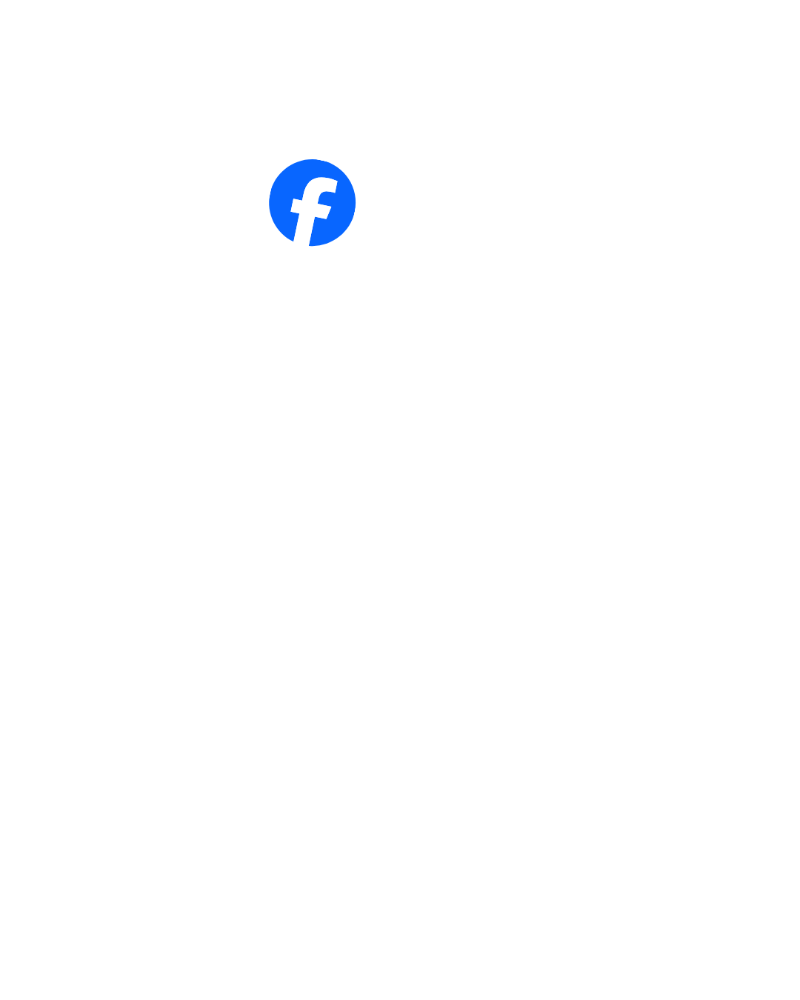

Anna Toledo
Transformo visiones en realidades audiovisuales. Mi trabajo no es solo producir, es tender puentes entre tu estrategia de negocio y la forma en la que conectas con tu audiencia. Trabajo con rigor técnico, pero con la mirada puesta en lo que realmente importa: las personas.
Explora mi trabajo




